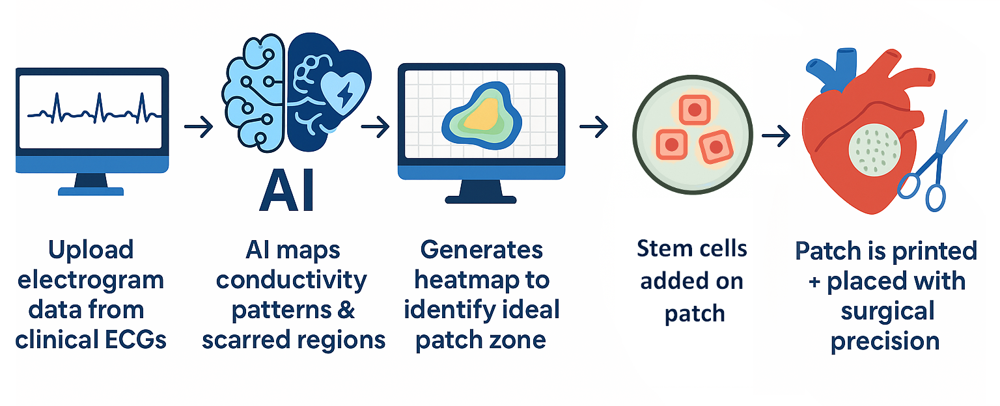

🧬imagine this:
you’ve just survived a heart attack. you’re told to “rest,” but your heart skips, stalls, and you’re scared. you’re 50, and already being fitted for a defibrillator. no one mentions recovery. just risk. meanwhile, the technology exists — but not for you.
1 in 4 cardiac patients experience a second major event within 5 years. cardiac patches exist, but they’re often one-size-fits-all — failing to match the rhythm of your actual heart.
🧬the problem: engineered patches fail to integrate electrically
- Placement is imprecise, based on guesswork. Inaccurate placement of electrodes can significantly affect the morphology of ECG waveforms, potentially leading to misinterpretation of cardiac rhythms. This underscores the importance of precise placement to ensure accurate diagnosis and effective treatment.
- Electrical mismatch leads to arrhythmias. Studies have shown that spatial profiles of electrical mismatch can determine vulnerability to reentrant arrhythmias. This highlights the critical need for electrical compatibility between the patch and the host tissue to prevent adverse outcomes.
- Post-MI hearts vary widely — but patches don’t. After a myocardial infarction (MI), the heart undergoes complex remodeling, resulting in heterogeneous tissue characteristics that are not adequately addressed by standardized patches (Proceedings of the National Academy of Sciences).
- iPSC-derived cardiomyocytes (iPSC-CMs) often exhibit immature electrical properties, leading to poor integration with native cardiac tissue.
🧬wait, what are hiPSC-CMs?
human induced pluripotent stem cell-derived cardiomyocytes (hiPSC-CMs) offer a promising cell source for cardiac regeneration due to their ability to differentiate into functional cardiomyocytes. Preclinical studies have demonstrated improved cardiac function following transplantation of hiPSC-CM patches in animal models.
🧬proposed solution
the HEARTMAP team proposes the development of a novel cardiac patch scaffold embedded with conductive polymers (e.g., polypyrrole or reduced graphene oxide) seeded with iPSC-CMs. To enhance therapeutic precision, we will integrate machine learning (ML) models trained on patient-specific electrogram and imaging data to guide patch placement and predict arrhythmic zones.
regenerating heart tissue starts long before a patch ever reaches the heart. It begins at the cellular level — where a single stem cell is guided to become a beating cardiomyocyte.
🧬 the journey:
- Activin A triggers mesoderm formation — the germ layer that gives rise to the heart.
- BMP4 nudges cells toward cardiac progenitor identity.
- FGF2 supports proliferation and survival of early cardiac cells.
- Matrix stiffness must mimic natural heart tissue.
- Electrical cues guide alignment and contractility of cardiomyocytes.
these factors work together to ensure the resulting cells are ready to sync with the patient’s heart.

🧬 biocompatibility: beyond just “safe”
- Non-cytotoxicity: materials must not harm cells or trigger rejection.
- Mechanical compliance: patches must “beat” with the heart.
- Cellular integration: scaffolds must support gap junctions (e.g., connexin 43).
materials like rGO and PPy are promising — they offer conductivity and support alignment of cardiomyocytes.
Referenced: Guo et al., 2023, Bioactive Materials.
🧬 the patch

- Scaffold: Biodegradable hydrogel scaffold infused with conductive polymer (PPy or rGO)
- Cells: Human iPSC-CMs validated for purity, conduction, and contractile protein expression
- Conductivity Enhancement: Scaffold modified to match anisotropic conduction of native myocardium
🧬 machine learning model
for many bioengineered solutions, scalability and biocompatibility remain barriers. however, an ML approach could be a promising change.
- Input: Electrogram data, cardiac MRI, LGE-MRI scar segmentation
- Output: Predictive placement heatmap, arrhythmic vulnerability index
- Algorithm: 3D U-Net with attention layers, trained on >100 anonymized ECG/imaging datasets
🧬 ethics in regenerative medicine
Regenerative therapies offer hope — but not without risk. We believe that advancing medicine must never come at the cost of ethics.
1. stem cell risks and sourcing
- tumorigenicity: undifferentiated iPSCs can cause uncontrolled growth if not fully cleared.
- ethical sourcing: Were iPSCs autologous or allogeneic? Was informed consent obtained?
Miyagawa et al., 2023 emphasized safety monitoring in iPSC-CM patch clinical trials.
2. digital risk
- AI-analyzed ECGs and imaging could raise data privacy concerns.
- Autonomous surgical guidance tools must be continuously validated to avoid harm.
🧬 clinical transparency and long-term trust
all first-in-human trials using regenerative heart patches must follow Health Canada’s Special Access Program. We commit to:
- clear informed consent for patients and families.
- thoughtful patient selection based on medical criteria.
- long-term monitoring to detect adverse effects and ensure success.
🧬 how do we build it?
Proposed Clinical Trial Structure: Trial #1
- Animal Model: Yorkshire pigs, MI induced via LAD ligation (n=10 with patch, n=10 control)
- Implantation Site Determination: AI-based predictive modeling using real-time electrogram mapping
- Procedure: Patch applied epicardially under general anesthesia
- Endpoints:
- Electromechanical coupling (optical mapping + ECG)
- Fibrosis volume (histology)
- Arrhythmia incidence (telemetry)
- Histological evidence of iPSC-CM retention and alignment
- Reference Study: Wong RC et al., UHN (2020), “Transplantation of iPSC-derived cardiac tissue in swine post-MI improves functional recovery” – Canadian Journal of Cardiology
Proposed Clinical Trial Structure: Trial #2
- Eligibility Criteria: Adult patients (18–70) with ischemic cardiomyopathy, NYHA Class II–III symptoms, and documented infarction within 1 year
- Surgical Procedure:
- Patch generated in GMP facility from autologous or allogeneic iPSCs
- Conductive scaffold fabricated and seeded ex vivo, validated for sterility
- AI-generated placement map used to guide epicardial placement
- Safety Monitoring:
- ECG and Holter monitoring for 30 days post-implant
- Echocardiogram at baseline, 30, 90, and 180 days
- Cardiac MRI at 90 days to assess remodeling and patch integration
🧬 how do we scale?
proposed partners: Ted Rogers Centre for Heart Research (UHN + SickKids + U of T) – Comprehensive cardiology and iPSC expertise
🧬 behind the scenes:
This project combines regenerative engineering, AI, and material science. Illustrations were done through the use of ChatGPT, with supporting research from recent publications in cardiac bioengineering. Website + prototype by Elena Osipyan :)
🧬 references:
- Zhang, Donghui, et al. “3D Bioprinting of Cell-Laden Cardiac Patch for Heart Regeneration.” NPJ Regenerative Medicine, vol. 6, 2021. Link
- Ntagiantas, Evagelos, and Marco Pignatelli. “Estimating Cardiac Tissue Conductivity from Electrograms with Fully Convolutional Networks.” Semantic Scholar, 2022. Link
- Shin, Seung Rim, et al. “Electroconductive Biomaterials for Cardiac Tissue Engineering.” Frontiers in Bioengineering and Biotechnology, vol. 10, 2022. Link
- Khan, Tareq, et al. “Advances in Conductive Biomaterials for Cardiac Tissue Engineering: Design, Fabrication, and Functional Integration.” Polymers, vol. 17, no. 5, 2025. Link
- Liu, Yuxuan, et al. “Large Cardiac Muscle Patches Engineered From Human Induced-Pluripotent Stem Cell–Derived Cardiac Cells Improve Recovery from Myocardial Infarction in Swine.” Circulation, vol. 137, no. 16, 2018. Link
- Miyagawa, Shigeru, et al. “Safety Confirmation of Induced Pluripotent Stem Cell–Derived Cardiomyocyte Patches for Clinical Application.” NPJ Regenerative Medicine, vol. 8, no. 1, 2023. Link
- Menasché, Philippe. “Cell Therapy Trials for Heart Regeneration—Lessons Learned and Future Directions.” Nature Reviews Cardiology, vol. 15, 2018. Link
- Guo, Rui, et al. “Engineering a Conduction-Consistent Cardiac Patch with rGO/PLCL Electrospun Nanofibrous Membrane and Human iPSC-Derived Cardiomyocytes.” Bioactive Materials, vol. 20, 2023. Link
- Ting, Daniel S.W., et al. “Artificial Intelligence and Deep Learning in Cardiovascular Imaging.” Nature Reviews Cardiology, vol. 18, 2021. Link